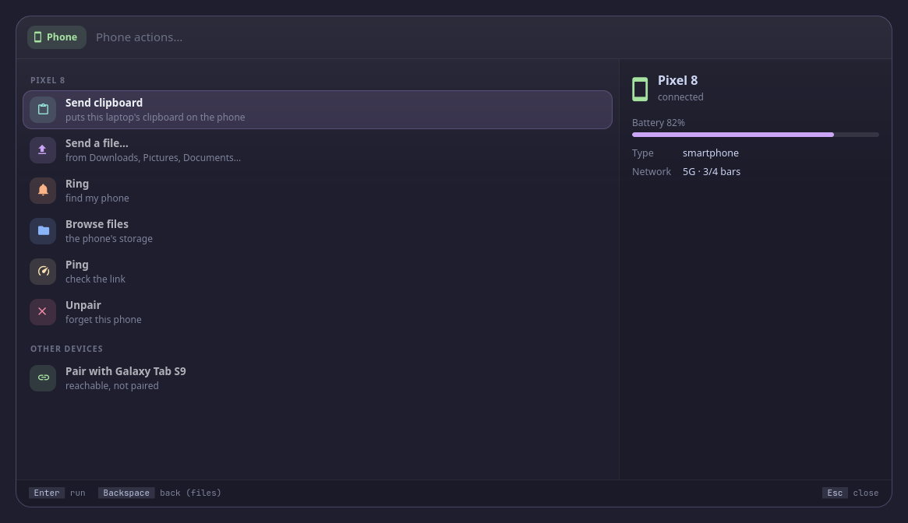

Screenshots use a made-up demo phone.
Doot (दूत) is Sanskrit for "messenger": the messenger that carries files, the clipboard and pings to your phone.
doot is your phone, through KDE Connect for Vyom: one keyboard-driven panel that opens instantly, with live data, a preview and a key for everything. It runs on any compositor with the layer-shell protocol (sway, Hyprland, river, niri, Wayfire, labwc…). In Vayu, the desktop it was built for, it replaces phone-picker.py.
#Features
- The phone at the top: its battery as a ring, its name with a green "Connected", mobile signal as bars and a word, the network (5G, LTE…) and whether it's charging.
- Its actions as numbered tiles: send the clipboard, send a recent file (from Downloads, Pictures, Documents…), ring it to find it, browse its storage, ping it. A number (
1..5) runs one;/searches them,Enterruns the selected one. - Unpair is red and apart, and asks first:
Space d dasks,yunpairs. - Vim keys (Vyom 0.7): NORMAL and INSERT modes,
Spaceas the leader with a which-key strip,?for every key andSpace Spacefor a palette of every action. - Pairing requests at the top with Accept / Reject and the verification key; other devices below,
Enterpairs a reachable one. - No transfer list: KDE Connect doesn't publish its transfers' progress to other programs.
- Keyboard first: every action has a key, shown in the footer; the mouse works too.
- Never freezes the panel: slow commands run in the background.
#Install
#Requirements
- Vyom 0.7 or newer (Python 3.11+, PyGObject, GTK 4, gtk4-layer-shell, a Nerd Font)
kdeconnect-cli,busctl- optional: wl-paste (send clipboard)
- optional: yazi + kitty (browse)
#Install
git clone https://github.com/Theyashsawarkar/doot ~/.local/share/vyom/plugins/doot
vyom reload # pick it up (or log out and in)
vyom doot # open it; run it again to closeGive it a key in your compositor, e.g. sway:
bindsym $mod+<key> exec vyom doot#Update and uninstall
git -C ~/.local/share/vyom/plugins/doot pull && vyom reload # update
rm -rf ~/.local/share/vyom/plugins/doot && vyom reload # uninstall#Usage
Open it with vyom doot (or your key). It opens in NORMAL mode, where every letter is a key and typing changes nothing: 1..5 run the phone's actions, j / k move, Enter runs the selected row, / types to search the actions (INSERT mode; Esc goes back). In the file list, l or Enter sends a file and h, q, Esc or Backspace go back. Space is the leader: wait a moment after it and a strip shows what comes next.
Vyom's vim keys work too: ? and Space ? list every key, Space Space is the palette, q closes, Esc steps back, Space u f is fullscreen, Space r refreshes, j / k move, gg / G jump, / searches.
Normal mode, the phone (where it opens; / searches its actions)
| Key | Action |
|---|---|
1 | Send this laptop's clipboard to the phone |
2 | Send a file to the phone (pick it from the list) |
3 | Play the phone's ringtone (find it) |
4 | Open the phone's storage in a file manager |
5 | Send a ping to the phone |
Normal mode, the file list (Send a file)
| Key | Action |
|---|---|
l | Send the selected file to the phone |
h | Go back to the phone |
q | Go back to the phone (on the phone: close the panel) |
Leader (Space)
| Key | Action |
|---|---|
Space x c | Send this laptop's clipboard to the phone |
Space x f | Send a file to the phone (pick it from the list) |
Space n r | Play the phone's ringtone (find it) |
Space n p | Send a ping to the phone |
Space o f | Open the phone's storage in a file manager |
Space a a | Add the device that asks to pair (accept it; check the key on the phone) |
Space d r | Decline the waiting pairing request |
Space d d | Remove the pairing with the phone (y confirms) |
Space y b | Copy the phone's battery level |
#Configuration
Everything is optional, in ~/.config/vyom/config.toml under [plugin.doot]:
| Setting | Default | What it does |
|---|---|---|
browse_command | yazi in kitty, else xdg-open | How to open the phone's storage ({path} is replaced) |
Run vyom reload after editing.
#Troubleshooting
- Nothing opens.
vyom listshows every installed tool, and why one is skipped (a missing requirement, or a Vyom that's too old). - It opened, then something failed. Look for a
Tracebackin the daemon's log,journalctl --user -u vyom -u vyom-daemon -b(without systemd:~/.local/state/vyom/daemon.log), and open an issue with it. - No blur or rounded corners. That's the compositor: on SwayFX, add
layer_effects "vyom" { blur enable; corner_radius 20; shadows enable }.
#The Vyom family
Each tool is its own repository, so you install only the ones you want:
| Tool | What it does | |
|---|---|---|
| dvara | द्वार, gateway | The app launcher |
| ganit | गणित, mathematics | The calculator and converter |
| smriti | स्मृति, memory | Clipboard history |
| bhava | भाव, feeling, emotion | The emoji picker |
| tarang | तरंग, wave | Wi‑Fi and the hotspot |
| setu | सेतु, bridge | Bluetooth |
| doot (this one) | दूत, messenger | Your phone, through KDE Connect |
| patra | पात्र, vessel | Docker containers |
| akashvani | आकाशवाणी, voice from the sky | Notifications |
| raga | राग, melody | YouTube music and video |
| mudra | मुद्रा, gesture | Keybinding search |
| urja | ऊर्जा, energy | The battery at a glance |
| vishram | विश्राम, rest | The power menu |
| kendra | केन्द्र, centre | Quick settings |
#Contributing
Bug reports, ideas and pull requests are welcome: see CONTRIBUTING.md for the development setup and the few rules every tool follows, and CHANGELOG.md for what changed in each release. Please report security issues privately (SECURITY.md).
#License
MIT.